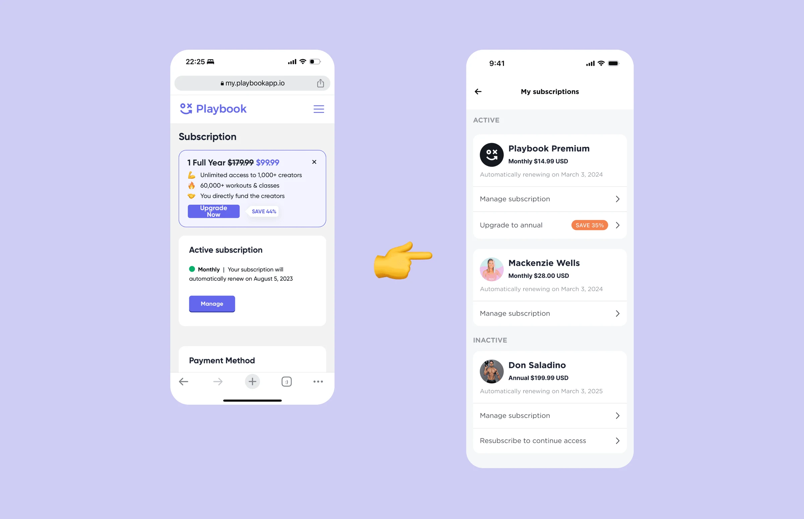
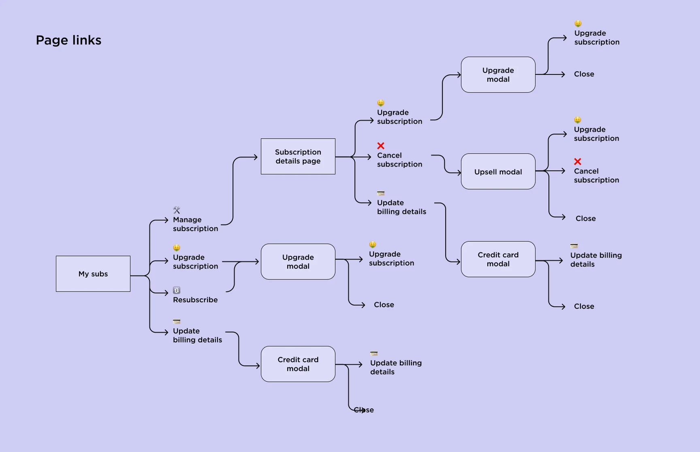
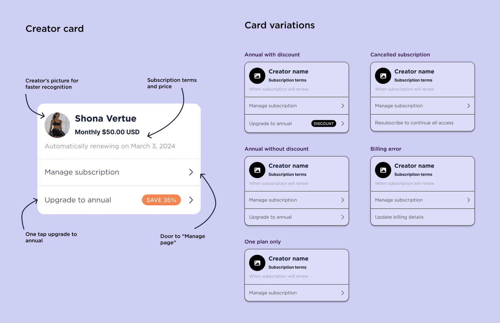
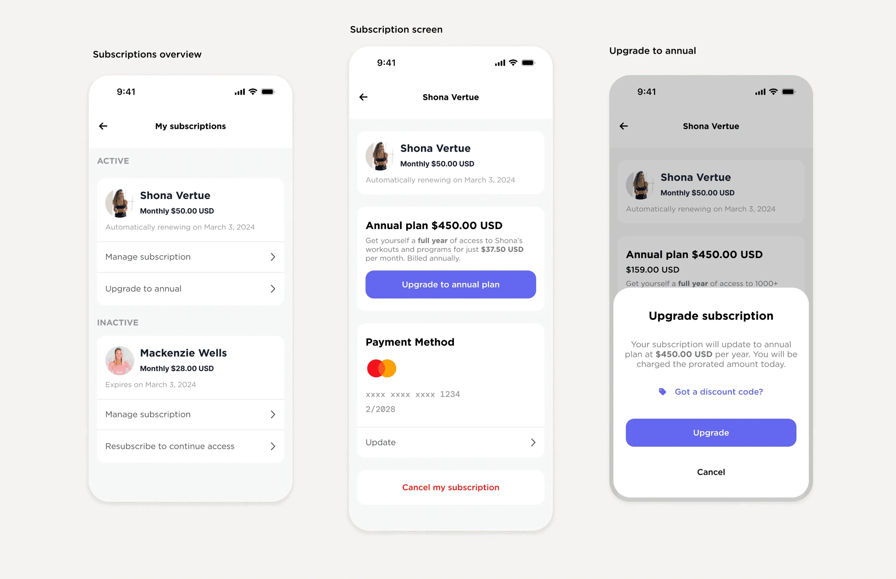

September 2023
Archive
Managing many subscriptions in one place
To support growth, Playbook moved from one subscription to one for each creator. I led the design of that move, from a single plan to managing several in the app.

- Discipline
- Product design
- Company
- Playbook
- Year
- 2023
- Timeline
- 1 month
01
Problem
Playbook used to have a single subscription, one flat fee for all content and all creators. Stripe handled subscriptions, so people had to leave the app for an outdated web page to make any change.
Paying per creator added complexity on both sides. Creators wanted different things: discounts, annual-only plans, or monthly plans only. Members had new questions: how to manage several subscriptions, pay with different methods, or change one plan without touching the others.
We wanted subscriptions to be easy to manage, even many at once, and we wanted fewer cancellations.
02
What I did
With the creator economy growing, I assumed others had solved this before. I did competitor research and worked with my team and PM on how other apps handled it. To give creators the flexibility they needed, the UI had to be modular and easy to extend. We tested a few approaches before landing on the final one.
I mapped every action available on each page, so navigation stayed simple and an upgrade was reachable from every page where it made sense. Then I designed the subscription card to hold every variation while staying clear.


03
Solution
A modular interface that supports creators' pricing choices and shows members what they pay for and when. We built it in React Native. A web page still opens, but inside the app, and people barely notice.

04
Impact
Members and creators both responded well to the new page. Cancellations went down. The cancel button sits below the fold, and people who start to cancel get a discount offer. The design covers creators' different needs and stays simple for members.